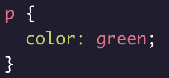
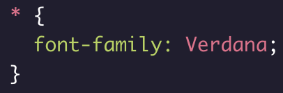
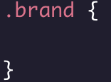
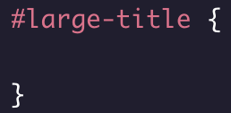
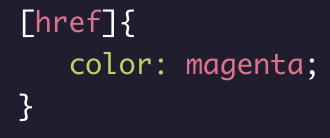

| Type |
The type selector matches the type of the element in the HTML document |
 |
| Universal |
The universal selector selects all elements of any type. |
 |
| Class |
Selecting an element is possible using the HTML class attribute |
 |
| ID |
If an HTML element needs to be styled uniquely, we can give it an ID using the id attribute |
 |
| Attribute |
The attribute selector can be used to target HTML elements that already contain attributes. Elements of the same type can be targeted differently by their attribute |
 |
| Attribute Type & Value |
Select an element where the attribute contains any instance of the specified value |
|